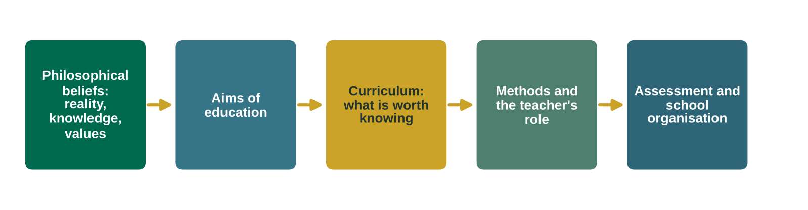
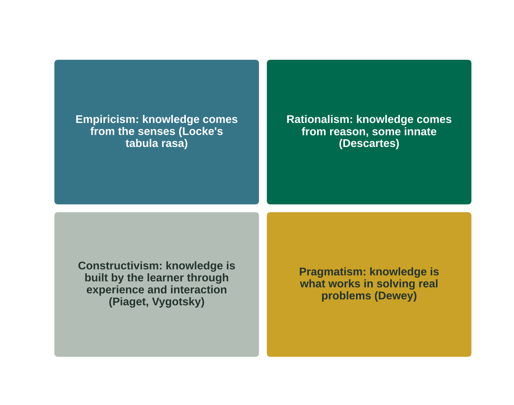
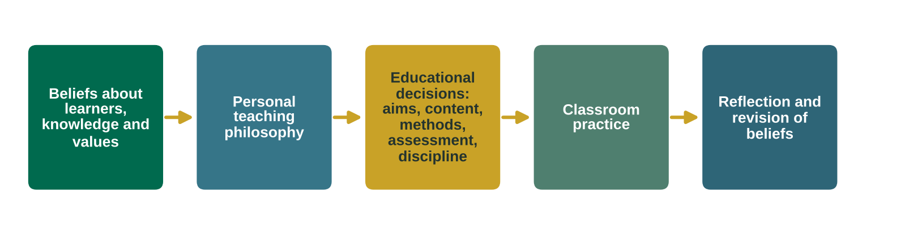
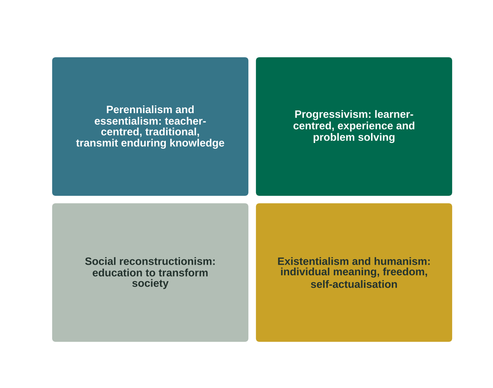
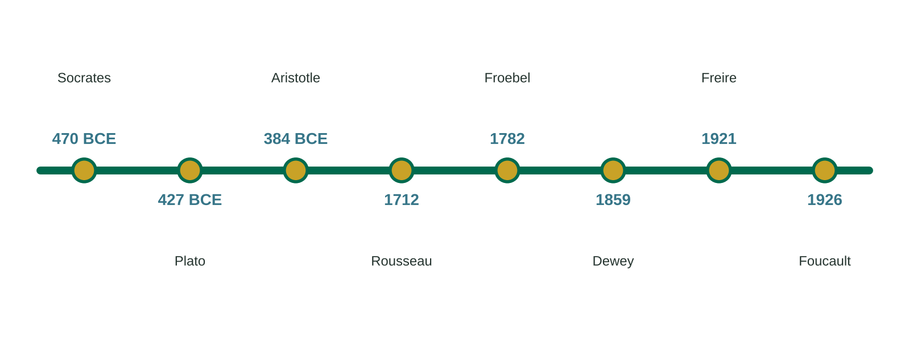
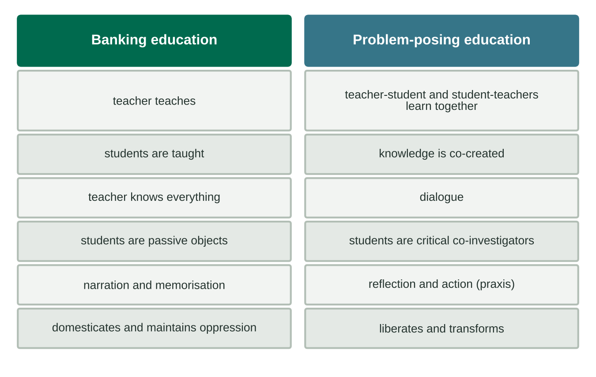

PC 115 শিক্ষার দার্শনিক ভিত্তি (Philosophical Foundation of Education)
অধিবিদ্যা, জ্ঞানতত্ত্ব, মূল্যতত্ত্ব, শিক্ষাদর্শন এবং পাশ্চাত্য ও প্রাচ্যের মহান শিক্ষাচিন্তাবিদ
এটি ইংরেজি পাঠ নোটের বাংলা সংস্করণ। পাঠতালিকা ও তথ্যসূত্রের বইয়ের নাম মূল ভাষায় রাখা হয়েছে, যাতে লাইব্রেরিতে সহজে খুঁজে পান।
সূচিপত্র
এই কোর্স সম্পর্কে
শিক্ষাক্রমে কী অন্তর্ভুক্ত হবে থেকে শুরু করে একজন শিক্ষক একটি শিশুর সঙ্গে কেমন আচরণ করবেন, প্রতিটি শিক্ষাগত সিদ্ধান্তই বাস্তবতা, জ্ঞান ও মূল্য সম্পর্কে কিছু পূর্বানুমানের ওপর প্রতিষ্ঠিত। এই কোর্সটি সেই পূর্বানুমানগুলোকে দৃশ্যমান করে তোলে। এতে দর্শনের শাখাসমূহ, প্রধান অধিবিদ্যক ও জ্ঞানতাত্ত্বিক মতবাদ ও সেগুলোর শিক্ষাগত তাৎপর্য, প্রধান শিক্ষাদর্শনসমূহ (চিরন্তনবাদ, সারবাদ, প্রগতিবাদ, সামাজিক পুনর্গঠনবাদ, অস্তিত্ববাদ ও মানবতাবাদ), শিক্ষার নীতিশাস্ত্র এবং সক্রেটিস থেকে ফ্রেইরি ও ফুকো এবং কনফুসিয়াস থেকে রবীন্দ্রনাথ ঠাকুর, বেগম রোকেয়া ও বঙ্গবন্ধু পর্যন্ত মহান দার্শনিকদের অবদান পরিচিত করানো হয়েছে। এটি আপনাকে নিজের শিক্ষাদান-দর্শন লিখতেও নির্দেশনা দেয়, যা পরীক্ষায় ও ভাইভায় প্রায়ই জানতে চাওয়া হয়।
কোর্সের উদ্দেশ্য
দর্শনের অর্থ, কার্যাবলি ও শাখাসমূহ এবং দর্শন ও শিক্ষার মধ্যকার সম্পর্ক ব্যাখ্যা করতে পারবেন।
অধিবিদ্যক ও জ্ঞানতাত্ত্বিক মতবাদসমূহ এবং শিক্ষার লক্ষ্য, শিক্ষাক্রম, পদ্ধতি ও শিক্ষকের ভূমিকায় সেগুলোর তাৎপর্য বিশ্লেষণ করতে পারবেন।
শিক্ষাদান সম্পর্কে একটি ব্যক্তিগত দর্শন গড়ে তুলতে ও তার ওপর প্রতিফলন করতে পারবেন।
শিক্ষায় প্রধান পাশ্চাত্য ও প্রাচ্য দার্শনিকদের অবদান মূল্যায়ন করতে পারবেন।
প্রতিটি ইউনিট অফিশিয়াল পাঠ্যসূচির ক্রম অনুসরণ করে। প্রথমে মূল আলোচনা পড়ুন, তারপর মূল কথা বক্সগুলো, এরপর পরীক্ষার প্রস্তুতি প্রশ্ন দিয়ে নিজেকে যাচাই করুন।
সোনালি বক্স = অবশ্যই মনে রাখার বিষয়। সবুজাভ নীল বক্স = সংজ্ঞা ও পড়ার কৌশল। সবুজ বক্স = বাংলাদেশ প্রেক্ষাপট।
শেষ অধ্যায়টি বিশ্ববিদ্যালয় পরীক্ষার ধরনে একটি প্রশ্নব্যাংক (উত্তরসহ MCQ, সংক্ষিপ্ত ও রচনামূলক প্রশ্ন), এরপর APA 7th রীতিতে পূর্ণ তথ্যসূত্র।
ভর্তি, বাজেট ও নীতি সংক্রান্ত পরিসংখ্যান প্রতি বছর বদলায়। পরীক্ষার আগে BANBEIS, DPE, UGC ও UNESCO-এর সর্বশেষ তথ্য দেখে নিন।
ইউনিট ১: দর্শন ও শিক্ষাদর্শনের মৌলিক ধারণা
অধ্যায়ের সারসংক্ষেপ
দর্শন (Philosophy) শব্দটি গ্রিক philos (ভালোবাসা) ও sophia (প্রজ্ঞা) থেকে এসেছে: অর্থাৎ প্রজ্ঞার প্রতি ভালোবাসা । এটি বাস্তবতা, জ্ঞান, মূল্য, যুক্তি, মন ও ভাষা সম্পর্কিত সবচেয়ে মৌলিক প্রশ্নগুলো নিয়ে সমালোচনামূলক, নিয়মতান্ত্রিক ও যৌক্তিক অনুসন্ধান।
এই অধ্যায়ে যা আছে: দর্শনের অর্থ ও সংজ্ঞা; দর্শনের কার্যাবলি; দর্শনের শাখাসমূহ; দর্শনের প্রয়োগক্ষেত্র; শিক্ষাদর্শনের পরিধি ও প্রয়োজনীয়তা।
মনে রাখার মূল বিষয়:
- "শিক্ষার ভিত্তি হিসেবে দর্শন" প্রশ্নের ধ্রুপদি উত্তর হলো ডিউইর সূত্র: দর্শন ও শিক্ষা একই মুদ্রার দুই পিঠ; দর্শন হলো এর চিন্তনমূলক দিক এবং শিক্ষা হলো এর সক্রিয় দিক।
শিক্ষাক্রমে যা বলা হয়েছেইউনিট ১: দর্শন ও শিক্ষাদর্শনের মৌলিক ধারণা · ৩ সংযোগ ঘণ্টা
এই ইউনিট শেষে শিক্ষার্থীরা যা পারবে
- দর্শনের কার্যাবলি ব্যাখ্যা করতে পারবেন
- দর্শনের শাখাসমূহের কার্যাবলি ও প্রয়োগক্ষেত্র আলোচনা করতে পারবেন
- শিক্ষাদর্শন অধ্যয়নের যৌক্তিকতা ব্যাখ্যা করতে পারবেন
- দর্শনের অর্থ, সংজ্ঞা ও কার্যাবলি
- দর্শনের প্রধান শাখাসমূহ ও সেগুলোর অনুসন্ধানের ক্ষেত্র
- অধিবিদ্যা (Metaphysics)
- জ্ঞানতত্ত্ব (Epistemology)
- মূল্যতত্ত্ব (Axiology)
- দর্শনের প্রয়োগক্ষেত্র: বিজ্ঞানের দর্শন, শিক্ষাদর্শন, ধর্মদর্শন, মনোদর্শন, শিল্পদর্শন, রাষ্ট্রদর্শন
- শিক্ষাদর্শন অধ্যয়নের পরিধি ও প্রয়োজনীয়তা: শিক্ষার ভিত্তি হিসেবে দর্শন
১.১ দর্শনের অর্থ ও সংজ্ঞা
Philosophy শব্দটি গ্রিক philos (ভালোবাসা) ও sophia (প্রজ্ঞা) থেকে এসেছে: অর্থাৎ প্রজ্ঞার প্রতি ভালোবাসা। এটি বাস্তবতা, জ্ঞান, মূল্য, যুক্তি, মন ও ভাষা সম্পর্কিত সবচেয়ে মৌলিক প্রশ্নগুলো নিয়ে সমালোচনামূলক, নিয়মতান্ত্রিক ও যৌক্তিক অনুসন্ধান। বাংলায় দর্শন (দর্শন) শব্দের অর্থ "দেখা" বা "দৃষ্টি", যা সত্যের প্রত্যক্ষ উপলব্ধিকে নির্দেশ করে।
প্লেটো (Plato): "দর্শন হলো বস্তুর শাশ্বত প্রকৃতি-বিষয়ক বিজ্ঞান।"
অ্যারিস্টটল (Aristotle): দর্শন হলো "সেই বিজ্ঞান, যা সত্তাকে তার নিজস্ব স্বরূপে অনুসন্ধান করে" (প্রথম দর্শন হিসেবে অধিবিদ্যা)।
বার্ট্রান্ড রাসেল (Bertrand Russell): দর্শন হলো "মৌলিকভাবে চিন্তা করার এক অসাধারণ উদ্ভাবনী প্রচেষ্টা" এবং "ধর্মতত্ত্ব ও বিজ্ঞানের মধ্যবর্তী" কিছু (History of Western Philosophy, 1945)।
১.২ দর্শনের কার্যাবলি
অনুমানমূলক (সংশ্লেষী): বাস্তবতা ও জীবন সম্পর্কে একটি সামগ্রিক দৃষ্টিভঙ্গি গড়ে তোলে।
আদর্শনিষ্ঠ (নির্দেশমূলক): কী হওয়া উচিত, যেমন ভালো, ন্যায্য ও সুন্দর, তার মানদণ্ড নির্ধারণ করে।
বিশ্লেষণমূলক (সমালোচনামূলক): প্রত্যয় ও ভাষাকে স্পষ্ট করে এবং পূর্বানুমান ও স্ববিরোধ উন্মোচন করে (বিংশ শতাব্দীর ইঙ্গ-মার্কিন শিক্ষাদর্শনে এটিই ছিল প্রধান ধারা: Peters, Hirst, Scheffler)।
সমন্বয়মূলক: বিভিন্ন ক্ষেত্রের জ্ঞানকে একটি সুসংগত সমগ্রে সম্পর্কিত করে।
১.৩ দর্শনের শাখাসমূহ

চিত্র ১. দর্শনের প্রধান শাখাসমূহ ও সেগুলোর প্রশ্ন
| শাখা | কেন্দ্রীয় প্রশ্ন | এ থেকে উদ্ভূত শিক্ষাগত প্রশ্ন |
|---|---|---|
| অধিবিদ্যা | চূড়ান্তভাবে বাস্তব কী? মানুষের প্রকৃতি কী? | শিক্ষার্থীর প্রকৃতি কী? সবচেয়ে "বাস্তব" বা গুরুত্বপূর্ণ হিসেবে কী শেখানো উচিত? |
| জ্ঞানতত্ত্ব | জ্ঞান কী? আমরা কীভাবে জানি? জ্ঞান কি নিশ্চিত? | আমাদের কীভাবে শেখানো উচিত? কোনটি বৈধ জ্ঞান হিসেবে গণ্য হয়? অভিজ্ঞতা, যুক্তি ও কর্তৃত্বের ভূমিকা কী? |
| মূল্যতত্ত্ব (নীতিবিদ্যা ও নন্দনতত্ত্ব) | কোনটি মূল্যবান, ন্যায্য ও সুন্দর? | শিক্ষার কোন মূল্যবোধ লালন করা উচিত? শিক্ষকদের কেমন আচরণ করা উচিত? শিল্পকলার স্থান কোথায়? |
| যুক্তি | বৈধ যুক্তি কী? | শিক্ষার্থীরা কীভাবে সমালোচনামূলকভাবে চিন্তা করতে শিখবে? |
১.৪ দর্শনের প্রয়োগক্ষেত্র
বিজ্ঞানের দর্শন (Philosophy of science): বৈজ্ঞানিক জ্ঞানের প্রকৃতি, পদ্ধতি, ব্যাখ্যা ও তত্ত্বের পরিবর্তন (পপারের মিথ্যাপ্রতিপাদনযোগ্যতা; কুনের প্যারাডাইম)।
শিক্ষাদর্শন (Philosophy of education): শিক্ষার লক্ষ্য, মূল্যবোধ, প্রত্যয় ও পদ্ধতি।
ধর্মদর্শন (Philosophy of religion): ঈশ্বর, বিশ্বাস, যুক্তি ও ধর্মীয় অভিজ্ঞতার প্রকৃতি।
মনোদর্শন (Philosophy of mind): চেতনা, মন-দেহ সমস্যা, মানসিক অবস্থা, কৃত্রিম বুদ্ধিমত্তা।
শিল্পদর্শন (নন্দনতত্ত্ব) (Philosophy of art, aesthetics): সৌন্দর্য, শিল্প ও নান্দনিক অভিজ্ঞতার প্রকৃতি।
রাষ্ট্রদর্শন (Political philosophy): ন্যায়বিচার, অধিকার, রাষ্ট্র, স্বাধীনতা ও গণতন্ত্র (প্লেটো, লক, রলস)।
১.৫ শিক্ষাদর্শনের পরিধি ও প্রয়োজনীয়তা
শিক্ষাদর্শন (Philosophy of education) শিক্ষার লক্ষ্য, শিক্ষাক্রম, পদ্ধতি, শিক্ষক, শিক্ষার্থী, শৃঙ্খলা, মূল্যায়ন এবং শিক্ষা ও সমাজের সম্পর্কের ক্ষেত্রে দার্শনিক অনুসন্ধান প্রয়োগ করে।
কেন এটি অধ্যয়ন করবেন?
এটি লক্ষ্য স্পষ্ট করে এবং দিকনির্দেশনা দেয় ("দর্শন ছাড়া শিক্ষা অন্ধ")।
এটি নীতি ও চর্চার পেছনের পূর্বানুমানগুলো উন্মোচন করে।
এটি লক্ষ্যের সঙ্গে সামঞ্জস্যপূর্ণ শিক্ষাক্রম ও পদ্ধতি নির্বাচনে নির্দেশনা দেয়।
এটি এমন সমালোচনামূলক ও প্রতিফলনশীল শিক্ষক তৈরি করে, যাঁরা নিজেদের সিদ্ধান্তের যৌক্তিকতা প্রমাণ করতে পারেন।
এটি বহুত্ববাদী সমাজে মূল্যবোধের দ্বন্দ্ব নিরসনে সহায়তা করে।
এটি শিক্ষাকে জাতীয় আদর্শ ও সংস্কৃতির সঙ্গে যুক্ত করে।
"দর্শন হলো শিক্ষার সবচেয়ে সাধারণ পর্যায়গুলোর তত্ত্ব।"
জন ডিউই (John Dewey), Democracy and Education (1916)
"শিক্ষার ভিত্তি হিসেবে দর্শন" প্রশ্নের ধ্রুপদি উত্তর হলো ডিউইর সূত্র: দর্শন ও শিক্ষা একই মুদ্রার দুই পিঠ; দর্শন হলো এর চিন্তনমূলক দিক এবং শিক্ষা হলো এর সক্রিয় দিক। জেন্টাইল (Gentile) বিষয়টি এভাবে বলেছেন: "দর্শন ছাড়া শিক্ষার অর্থ হবে শিক্ষার সুনির্দিষ্ট প্রকৃতি বুঝতে ব্যর্থ হওয়া।"

চিত্র ২. দর্শন কীভাবে শিক্ষাগত চর্চাকে রূপ দেয়
ইউনিট ২: অধিবিদ্যা ও জ্ঞানতত্ত্বের প্রধান দার্শনিক চিন্তাধারা
অধ্যায়ের সারসংক্ষেপ
কান্টের সংশ্লেষণ: "বিষয়বস্তুহীন চিন্তা শূন্য, প্রত্যয়হীন স্বজ্ঞা অন্ধ।" জ্ঞানের জন্য অভিজ্ঞতা এবং মনের সংগঠক প্রকারক (categories) উভয়েরই প্রয়োজন।
এই অধ্যায়ে যা আছে: অধিবিদ্যার মতবাদসমূহ; জ্ঞানতত্ত্বের মতবাদসমূহ; অধিবিদ্যক মতবাদ ও শিক্ষার সারসংক্ষেপ সারণি।
শিক্ষাক্রমে যা বলা হয়েছেইউনিট ২: অধিবিদ্যা ও জ্ঞানতত্ত্বের প্রধান দার্শনিক চিন্তাধারার উপলব্ধি · ৬ সংযোগ ঘণ্টা
এই ইউনিট শেষে শিক্ষার্থীরা যা পারবে
- অধিবিদ্যা ও জ্ঞানতত্ত্বের প্রধান দার্শনিক চিন্তাধারা বা মতবাদের বিশ্বাসসমূহ উপস্থাপন করতে পারবেন
- বিভিন্ন দার্শনিক ধারণা ও শিক্ষার মধ্যে সম্পর্ক স্থাপন করতে পারবেন
- এসব ধারণা শিক্ষায় প্রয়োগ করতে পারবেন
- অধিবিদ্যার মতবাদসমূহ: মৌলিক বিশ্বাস ও শিক্ষাগত তাৎপর্য
- ভাববাদ (Idealism)
- বাস্তববাদ (Realism)
- জড়বাদ (Materialism)
- প্রকৃতিবাদ (Naturalism)
- সারবাদ (Essentialism)
- অস্তিত্ববাদ (Existentialism)
- জ্ঞানতত্ত্বের মতবাদসমূহ: মৌলিক বিশ্বাস ও শিক্ষাগত তাৎপর্য
- অভিজ্ঞতাবাদ (Empiricism)
- বুদ্ধিবাদ (Rationalism)
- গঠনবাদ/নির্মাণবাদ (Constructivism/Constructionism)
- প্রয়োগবাদ (Pragmatism)
২.১ অধিবিদ্যার মতবাদসমূহ
ভাববাদ (Idealism)
প্রধান চিন্তাবিদ: প্লেটো, দেকার্ত (Descartes), বার্কলে (Berkeley), কান্ট (Kant), হেগেল (Hegel), ফ্রোবেল (Froebel); প্রাচ্যে বেদান্ত, বিবেকানন্দ ও (আংশিকভাবে) রবীন্দ্রনাথ ঠাকুর।
মৌলিক বিশ্বাস: চূড়ান্ত বাস্তবতা হলো মন, আত্মা বা ভাব। জড়জগৎ শাশ্বত আকারসমূহের (Forms) একটি অপূর্ণ প্রতিলিপি (প্লেটোর গুহার রূপক)। সত্য, শিব ও সুন্দর পরম ও শাশ্বত। মানুষ মূলত আধ্যাত্মিক সত্তা।
শিক্ষাগত তাৎপর্য:
লক্ষ্য: আত্মোপলব্ধি; চরিত্র গঠন ও নৈতিক বিকাশ; সত্য, শিব ও সুন্দরের অন্বেষণ; আধ্যাত্মিক বিকাশ।
শিক্ষাক্রম: মানবিক বিদ্যা, সাহিত্য, দর্শন, ইতিহাস, ধর্ম ও শিল্পকলা; বস্তুর চেয়ে ভাবের প্রাধান্য।
পদ্ধতি: বক্তৃতা, সংলাপ (সক্রেটীয় দ্বান্দ্বিক পদ্ধতি), আলোচনা, আদর্শের অনুকরণ, প্রতিফলন।
শিক্ষক: কেন্দ্রীয় ব্যক্তি, একজন নৈতিক ও বুদ্ধিবৃত্তিক আদর্শ (ফ্রোবেলের উপমায় শিশুর আত্মার "মালী")।
শৃঙ্খলা: আদর্শের প্রতি শ্রদ্ধার মাধ্যমে আত্মশৃঙ্খলা।
সমালোচনা: বিজ্ঞান, বৃত্তিমূলক দক্ষতা ও শিশুর আগ্রহকে উপেক্ষা করে; শিক্ষককেন্দ্রিক; মূল্যবোধ চাপিয়ে দেওয়া হতে পারে।
বাস্তববাদ (Realism)
প্রধান চিন্তাবিদ: অ্যারিস্টটল, অ্যাকুইনাস (Aquinas) (ধ্রুপদি / ধর্মীয় বাস্তববাদ), কমেনিয়াস (Comenius), লক (Locke), হার্বার্ট (Herbart), বেকন (Bacon) (প্রাকৃতিক / বৈজ্ঞানিক বাস্তববাদ), রাসেল ও হোয়াইটহেড (Whitehead) (নব্য বাস্তববাদ)।
মৌলিক বিশ্বাস: বাস্তবতা মন-নিরপেক্ষভাবে বিদ্যমান; বস্তুর বাহ্যজগৎ বাস্তব এবং ইন্দ্রিয় ও যুক্তির মাধ্যমে জ্ঞেয়; প্রাকৃতিক নিয়ম মহাবিশ্বকে নিয়ন্ত্রণ করে।
শিক্ষাগত তাৎপর্য:
লক্ষ্য: বাস্তব জগৎকে বোঝা; বাস্তব জীবনের জন্য প্রস্তুতি; যৌক্তিক ও ব্যবহারিক সামর্থ্যের বিকাশ।
শিক্ষাক্রম: বিজ্ঞান, গণিত, সমাজবিজ্ঞান, বৃত্তিমূলক বিষয়; সংগঠিত ও নিয়মতান্ত্রিক জ্ঞান।
পদ্ধতি: পর্যবেক্ষণ, পরীক্ষণ, প্রদর্শন, শিক্ষাসফর, আরোহী শিক্ষাদান; কমেনিয়াসের Orbis Pictus (1658), প্রথম সচিত্র পাঠ্যপুস্তক।
শিক্ষক: একজন পথপ্রদর্শক, যিনি বস্তুনিষ্ঠ জ্ঞান স্পষ্ট ও নিয়মতান্ত্রিকভাবে উপস্থাপন করেন।
সমালোচনা: যান্ত্রিক হয়ে পড়তে পারে; আধ্যাত্মিক ও কল্পনাশক্তির দিককে উপেক্ষা করে; মূল্যবোধকে নিছক তথ্যে পর্যবসিত করে।
জড়বাদ (Materialism)
প্রধান চিন্তাবিদ: ডেমোক্রিটাস (Democritus), এপিকিউরাস (Epicurus), হবস (Hobbes); মার্ক্স (Marx) ও এঙ্গেলসের (Engels) দ্বান্দ্বিক জড়বাদ।
মৌলিক বিশ্বাস: কেবল জড় ও তার গতিই বাস্তব; মন ও চেতনা জড়েরই ফল। মার্ক্সের ঐতিহাসিক জড়বাদ অনুযায়ী অর্থনৈতিক ভিত্তি সামাজিক, রাজনৈতিক ও সাংস্কৃতিক উপরিকাঠামো নির্ধারণ করে।
শিক্ষাগত তাৎপর্য: শিক্ষা অর্থনৈতিক কাঠামো দ্বারা গঠিত হয় এবং তারই সেবা করে; মানসিক ও কায়িক শ্রমের সমন্বয়ে বহুকারিগরি (polytechnic) শিক্ষা; বিজ্ঞান ও প্রযুক্তি; সামাজিক সমতা ও শ্রেণিচেতনার জন্য শিক্ষা। সমালোচকরা আধ্যাত্মিক ও ব্যক্তিস্বাধীনতার প্রতি অবহেলার কথা উল্লেখ করেন।
প্রকৃতিবাদ (Naturalism)
প্রধান চিন্তাবিদ: রুশো (Rousseau) (Émile, 1762), হার্বার্ট স্পেন্সার (Herbert Spencer), কোঁৎ (Comte) এবং এক অর্থে রবীন্দ্রনাথ ঠাকুর।
মৌলিক বিশ্বাস: প্রকৃতিই চূড়ান্ত বাস্তবতা; কোনো অতিপ্রাকৃত জগৎ নেই; শিশু জন্মগতভাবে ভালো ("স্রষ্টার হাত থেকে যখন সবকিছু আসে, তখন তা ভালো থাকে; মানুষের হাতে এসে সবকিছু অধঃপতিত হয়" – রুশো); বিকাশ প্রাকৃতিক নিয়ম অনুসরণ করে।
শিক্ষাগত তাৎপর্য:
লক্ষ্য: শিশুর সহজাত শক্তির স্বাভাবিক ও স্বাধীন বিকাশ; আত্মসংরক্ষণ; "পূর্ণাঙ্গ জীবনযাপন" (স্পেন্সার)।
শিক্ষাক্রম: শিশুর আগ্রহ ও বিকাশের স্তরভিত্তিক; প্রকৃতি পাঠ, শারীরিক কার্যক্রম, বিজ্ঞান।
পদ্ধতি: হাতে-কলমে শিখন, অভিজ্ঞতা, খেলা, স্বয়ংশিক্ষা (heuristic) ও আবিষ্কার পদ্ধতি; প্রারম্ভিক শৈশবে নেতিবাচক শিক্ষা (শিক্ষা দেওয়ার পরিবর্তে শিশুকে কলুষিত সামাজিক প্রভাব থেকে রক্ষা করা)।
শিক্ষক: একজন পর্যবেক্ষক ও পরিবেশ-প্রস্তুতকারী, যিনি নেপথ্যে থাকেন।
শৃঙ্খলা: স্বাভাবিক পরিণতির মাধ্যমে শৃঙ্খলা (যে শিশু জানালা ভাঙে, সে ঠান্ডা অনুভব করে)।
সমালোচনা: শিশুকে আবেগময় আদর্শায়িত রূপে দেখে; সমাজ, সংস্কৃতি ও নৈতিক নির্দেশনাকে উপেক্ষা করে; গণশিক্ষাব্যবস্থায় অবাস্তব।
সারবাদ (একটি অধিবিদ্যক-সাংস্কৃতিক অবস্থান হিসেবে)
প্রধান চিন্তাবিদ: উইলিয়াম সি. ব্যাগলি (William C. Bagley) (1938), আর্থার বেস্টর (Arthur Bestor), পরবর্তীকালে ই. ডি. হার্শ (E. D. Hirsch)।
মৌলিক বিশ্বাস: অপরিহার্য জ্ঞান, দক্ষতা ও মূল্যবোধের একটি মূল অংশ রয়েছে, যা প্রত্যেক শিক্ষিত ব্যক্তিকে আয়ত্ত করতে হবে; এই অপরিহার্য বিষয়গুলো সাংস্কৃতিক ঐতিহ্য থেকে আসে এবং তুলনামূলকভাবে স্থিতিশীল।
তাৎপর্য: একটি মূল শিক্ষাক্রম (3Rs, বিজ্ঞান, ইতিহাস, ভাষা); শিক্ষক-পরিচালিত নির্দেশনা; শৃঙ্খলা ও প্রচেষ্টা; প্রমিত মূল্যায়ন। শিক্ষাদর্শনসমূহের অধীনে (ইউনিট ৪) এটি বিস্তারিত আলোচনা করা হয়েছে।
অস্তিত্ববাদ (Existentialism)
প্রধান চিন্তাবিদ: কিয়ের্কেগার্ড (Kierkegaard) (ধর্মীয় অস্তিত্ববাদ), নিৎশে (Nietzsche), হাইডেগার (Heidegger), সার্ত্র (Sartre), সিমোন দ্য বোভোয়ার (Simone de Beauvoir), কামু (Camus), মার্টিন বুবার (Martin Buber)।
মৌলিক বিশ্বাস: "অস্তিত্ব সারসত্তার পূর্বগামী" (সার্ত্র): মানুষ প্রথমে অস্তিত্বশীল হয় এবং পরে স্বাধীন বাছাইয়ের মাধ্যমে নিজেকে সংজ্ঞায়িত করে। ব্যক্তি স্বাধীন ও দায়িত্বশীল এবং তাকে উদ্বেগ, অর্থহীনতা ও প্রকৃত (authentic) হয়ে ওঠার প্রয়োজনের মুখোমুখি হতে হয়।
শিক্ষাগত তাৎপর্য:
লক্ষ্য: প্রকৃত, স্বাধীন ও দায়িত্বশীল ব্যক্তির বিকাশ; আত্মসচেতনতা ও ব্যক্তিগত অর্থবোধ।
শিক্ষাক্রম: মানবিক বিদ্যা, শিল্পকলা, সাহিত্য, দর্শন; শিক্ষার্থীদের বাছাই করা বিষয়; মানব-অবস্থার (মৃত্যু, ভালোবাসা, স্বাধীনতা) অনুসন্ধান।
পদ্ধতি: সক্রেটীয় সংলাপ, আত্মপ্রকাশ, ব্যক্তিগত প্রকল্প, পছন্দের স্বাধীনতা; শিক্ষক ও শিক্ষার্থীর মধ্যে আমি–তুমি (I–Thou) সম্পর্ক (বুবার)।
শিক্ষক: একজন সহায়তাকারী, যিনি প্রত্যেক শিক্ষার্থীর স্বাধীনতা ও স্বাতন্ত্র্যকে শ্রদ্ধা করেন। এ. এস. নিলের (A. S. Neill) সামারহিল স্কুলকে (Summerhill School) প্রায়ই অস্তিত্ববাদ-প্রভাবিত বিদ্যালয় হিসেবে উল্লেখ করা হয়।
সমালোচনা: অতিমাত্রায় ব্যক্তিকেন্দ্রিক; সামাজিক প্রয়োজন ও নিয়মতান্ত্রিক জ্ঞানকে উপেক্ষা করে; গণশিক্ষাব্যবস্থায় বাস্তবায়ন কঠিন।
২.২ জ্ঞানতত্ত্বের মতবাদসমূহ
অভিজ্ঞতাবাদ (Empiricism)
প্রধান চিন্তাবিদ: জন লক (John Locke), জর্জ বার্কলে (George Berkeley), ডেভিড হিউম (David Hume), ফ্রান্সিস বেকন (Francis Bacon)।
বিশ্বাস: সকল জ্ঞান ইন্দ্রিয়-অভিজ্ঞতা থেকে আসে। জন্মের সময় মন থাকে একটি *tabula rasa* (অলিখিত শ্লেট) (Locke, 1690)।
শিক্ষাগত তাৎপর্য: ইন্দ্রিয় প্রশিক্ষণ, পর্যবেক্ষণ, পরীক্ষণ, দৃশ্য-শ্রাব্য উপকরণ, শিক্ষাসফর; আরোহী পদ্ধতি; শিখন পরিবেশের গুরুত্ব।
বুদ্ধিবাদ (Rationalism)
প্রধান চিন্তাবিদ: প্লেটো, দেকার্ত ("Cogito, ergo sum" – আমি চিন্তা করি, অতএব আমি আছি), স্পিনোজা (Spinoza), লাইবনিৎস (Leibniz)।
বিশ্বাস: যুক্তিই জ্ঞানের প্রধান উৎস; কিছু জ্ঞান সহজাত বা a priori (অভিজ্ঞতা-নিরপেক্ষ), যেমন গণিত ও যুক্তিবিদ্যায়।
শিক্ষাগত তাৎপর্য: গণিত, যুক্তিবিদ্যা ও অবরোহী যুক্তি; দ্বান্দ্বিক পদ্ধতি ও বিতর্ক; বুদ্ধিবৃত্তিক শক্তির বিকাশ।
কান্টের সংশ্লেষণ: "বিষয়বস্তুহীন চিন্তা শূন্য, প্রত্যয়হীন স্বজ্ঞা অন্ধ।" জ্ঞানের জন্য অভিজ্ঞতা এবং মনের সংগঠক প্রকারক (categories) উভয়েরই প্রয়োজন।
গঠনবাদ (Constructivism) ও নির্মাণবাদ (Constructionism)
প্রধান চিন্তাবিদ: পিয়াজে (Piaget) (জ্ঞানীয়), ভিগটস্কি (Vygotsky) (সামাজিক), ফন গ্লাসার্সফেল্ড (von Glasersfeld) (উগ্র/র্যাডিক্যাল), প্যাপার্ট (Papert) (নির্মাণবাদ), বার্গার ও লাকম্যান (Berger and Luckmann) (বাস্তবতার সামাজিক নির্মাণ)।
বিশ্বাস: জ্ঞান নিষ্ক্রিয়ভাবে গৃহীত হয় না; জ্ঞাতা অভিজ্ঞতা ও সামাজিক মিথস্ক্রিয়ার মাধ্যমে সক্রিয়ভাবে জ্ঞান নির্মাণ করে।
শিক্ষাগত তাৎপর্য: শিক্ষার্থীকেন্দ্রিক, অনুসন্ধান ও প্রকল্প পদ্ধতি; সহযোগিতা; পূর্বজ্ঞানের ওপর ভিত্তি করে অগ্রসর হওয়া; উপলব্ধির মূল্যায়ন; নির্মাণবাদ অন্যের সঙ্গে ভাগ করে নেওয়ার উপযোগী শিল্পকর্ম বা বস্তু তৈরির মাধ্যমে শিখনের ওপর জোর দেয়।
প্রয়োগবাদ (Pragmatism)
প্রধান চিন্তাবিদ: সি. এস. পার্স (C. S. Peirce), উইলিয়াম জেমস (William James), জন ডিউই, ডব্লিউ. এইচ. কিলপ্যাট্রিক (W. H. Kilpatrick)।
বিশ্বাস: যা কার্যকর তা-ই সত্য; ধারণা হলো সমস্যা সমাধানের হাতিয়ার (যন্ত্রবাদ, instrumentalism); বাস্তবতা পরিবর্তনশীল; জ্ঞান অভিজ্ঞতা ও পরীক্ষণের ফল; মূল্যবোধ পরিণতির সাপেক্ষে আপেক্ষিক।
শিক্ষাগত তাৎপর্য:
লক্ষ্য: বৃদ্ধি; সামাজিক দক্ষতা; অভিজ্ঞতার পুনর্গঠন; গণতান্ত্রিক জীবনযাপন।
শিক্ষাক্রম: শিশুর আগ্রহ ও বাস্তব জীবনের সমস্যাভিত্তিক; সমন্বিত ও নমনীয়।
পদ্ধতি: হাতে-কলমে শিখন; প্রকল্প পদ্ধতি (কিলপ্যাট্রিক) ও সমস্যা সমাধান পদ্ধতি; পরীক্ষণ।
শিক্ষক: পথপ্রদর্শক ও বন্ধু; বিদ্যালয় একটি ক্ষুদ্র গণতান্ত্রিক সমাজ।
শৃঙ্খলা: উদ্দেশ্যপূর্ণ কাজে অংশগ্রহণের মাধ্যমে সামাজিক শৃঙ্খলা।

চিত্র ৩. জ্ঞানের উৎস বিষয়ে চারটি জ্ঞানতাত্ত্বিক অবস্থান
২.৩ অধিবিদ্যক মতবাদ ও শিক্ষার সারসংক্ষেপ সারণি
| মতবাদ | বাস্তবতা | লক্ষ্য | শিক্ষাক্রম | পদ্ধতি | শিক্ষক |
|---|---|---|---|---|---|
| ভাববাদ | মন, ভাব | আত্মোপলব্ধি, চরিত্র | মানবিক বিদ্যা, ধর্ম | বক্তৃতা, সংলাপ | আদর্শ, কেন্দ্রীয় |
| বাস্তববাদ | ভৌত জগৎ | বাস্তবতা উপলব্ধি, জীবনের প্রস্তুতি | বিজ্ঞান, গণিত | পর্যবেক্ষণ, প্রদর্শন | নিয়মতান্ত্রিক নির্দেশক |
| জড়বাদ | জড়বস্তু | উৎপাদনশীল, সমতাভিত্তিক সমাজ | বিজ্ঞান, প্রযুক্তি, শ্রম | বহুকারিগরি, ব্যবহারিক | সমাজকর্মী |
| প্রকৃতিবাদ | প্রকৃতি | স্বাধীন স্বাভাবিক বিকাশ | শিশুর আগ্রহ, প্রকৃতি | খেলা, আবিষ্কার, কাজ | পর্যবেক্ষক, পরিবেশ-প্রস্তুতকারী |
| প্রয়োগবাদ | পরিবর্তনশীল অভিজ্ঞতা | বৃদ্ধি, সামাজিক দক্ষতা | সমন্বিত, সমস্যাভিত্তিক | প্রকল্প, সমস্যা সমাধান | পথপ্রদর্শক, বন্ধু |
| অস্তিত্ববাদ | ব্যক্তির অস্তিত্ব | প্রকৃততা, স্বাধীনতা | মানবিক বিদ্যা, পছন্দের বিষয় | সংলাপ, আত্মপ্রকাশ | সহায়তাকারী |
ইউনিট ৩: একজন শিক্ষাবিদের ব্যক্তিগত দর্শন
অধ্যায়ের সারসংক্ষেপ
প্রত্যেক শিক্ষকেরই শিক্ষা সম্পর্কে একটি ব্যক্তিগত দর্শন থাকে, তা সুস্পষ্ট হোক বা না হোক, এবং এটি প্রতিদিনের সিদ্ধান্তকে রূপ দেয়: কীভাবে পাঠ পরিকল্পনা করবেন, কোন বিষয়ে জোর দেবেন, ভুলের প্রতি কীভাবে সাড়া দেবেন, কীভাবে শৃঙ্খলা বজায় রাখবেন, কীভাবে মূল্যায়ন করবেন এবং শিক্ষার্থীদের সঙ্গে কেমন সম্পর্ক রাখবেন। যে শিক্ষক বিশ্বাস করেন জ্ঞান স্থির এবং তা হস্তান্তরযোগ্য, তিনি বক্তৃতা দেবেন এবং স্মরণশক্তি যাচাই করবেন…
এই অধ্যায়ে যা আছে: ব্যক্তিগত দর্শন ও শিক্ষাগত সিদ্ধান্ত গ্রহণ; একটি শিক্ষাদান-দর্শন কী দিয়ে গঠিত?; নিজের শিক্ষাগত বিশ্বাসের ওপর প্রতিফলন।
শিক্ষাক্রমে যা বলা হয়েছেইউনিট ৩: একজন শিক্ষাবিদের ব্যক্তিগত দর্শন · ৩ সংযোগ ঘণ্টা
এই ইউনিট শেষে শিক্ষার্থীরা যা পারবে
- একজন শিক্ষাবিদের ব্যক্তিগত শিক্ষাদর্শনের উপাদানগুলো চিহ্নিত করতে পারবেন
- একজন শিক্ষাবিদের ব্যক্তিগত দর্শন ও তাঁর শিক্ষাগত সিদ্ধান্ত গ্রহণের মধ্যকার সম্পর্ক ব্যাখ্যা করতে পারবেন
- নিজের চর্চা ও তার পেছনের দর্শন নিয়ে প্রতিফলন করতে পারবেন
- একজন শিক্ষাবিদের ব্যক্তিগত দর্শন ও শিক্ষাগত সিদ্ধান্ত গ্রহণের মধ্যকার সম্পর্ক
- একটি শিক্ষাদান-দর্শন কী দিয়ে গঠিত: শিক্ষাদান ও শিখন সম্পর্কে বিশ্বাস; শিক্ষার্থী সম্পর্কে বিশ্বাস; জ্ঞান সম্পর্কে বিশ্বাস; কোনটি জানার যোগ্য সে সম্পর্কে বিশ্বাস; দার্শনিক
- নিজের শিক্ষাগত বিশ্বাস ও নিজের শিক্ষাচর্চায় সেগুলোর প্রভাব নিয়ে প্রতিফলন
৩.১ ব্যক্তিগত দর্শন ও শিক্ষাগত সিদ্ধান্ত গ্রহণ
প্রত্যেক শিক্ষকেরই শিক্ষা সম্পর্কে একটি ব্যক্তিগত দর্শন থাকে, তা সুস্পষ্ট হোক বা না হোক, এবং এটি প্রতিদিনের সিদ্ধান্তকে রূপ দেয়: কীভাবে পাঠ পরিকল্পনা করবেন, কোন বিষয়ে জোর দেবেন, ভুলের প্রতি কীভাবে সাড়া দেবেন, কীভাবে শৃঙ্খলা বজায় রাখবেন, কীভাবে মূল্যায়ন করবেন এবং শিক্ষার্থীদের সঙ্গে কেমন সম্পর্ক রাখবেন। যে শিক্ষক বিশ্বাস করেন জ্ঞান স্থির এবং তা হস্তান্তরযোগ্য, তিনি বক্তৃতা দেবেন এবং স্মরণশক্তি যাচাই করবেন; আর যিনি বিশ্বাস করেন জ্ঞান নির্মিত হয়, তিনি অনুসন্ধানমূলক কাজের নকশা করবেন এবং উপলব্ধি মূল্যায়ন করবেন। দর্শনকে সুস্পষ্ট করলে ধারাবাহিকতা, প্রতিফলন ও পেশাগত উন্নয়ন সম্ভব হয়।

চিত্র ৪. বিশ্বাস থেকে চর্চা: ব্যক্তিগত শিক্ষাদান-দর্শনের ভূমিকা
৩.২ একটি শিক্ষাদান-দর্শন কী দিয়ে গঠিত?
একটি শিক্ষাদান-দর্শন বিবৃতি (teaching philosophy statement) (Chism, 1998; Kaplan et al., 2007) সাধারণত যে বিষয়গুলো তুলে ধরে:
শিক্ষাদান ও শিখন সম্পর্কে বিশ্বাস: শিখন কীভাবে ঘটে এবং শিক্ষকের ভূমিকা কী।
শিক্ষার্থী সম্পর্কে বিশ্বাস: তাদের প্রকৃতি, সম্ভাবনা, বৈচিত্র্য ও চাহিদা।
জ্ঞান সম্পর্কে বিশ্বাস: জ্ঞান স্থির নাকি নির্মিত, এবং নিশ্চিত নাকি অস্থায়ী।
কোনটি জানার যোগ্য সে সম্পর্কে বিশ্বাস: কোন জ্ঞান, দক্ষতা ও মূল্যবোধকে অগ্রাধিকার দেওয়া উচিত।
দার্শনিক ক্ষেত্রসমূহে ব্যক্তিগত বিশ্বাস: বাস্তবতা, সত্য, মূল্যবোধ এবং জীবন ও সমাজের উদ্দেশ্য সম্পর্কে দৃষ্টিভঙ্গি।
লক্ষ্য, পদ্ধতি ও প্রমাণ: শিক্ষক কীভাবে এই বিশ্বাসগুলোকে চর্চায় রূপ দেন এবং কার্যকারিতা কীভাবে মূল্যায়ন করা হয়।
৩.৩ নিজের শিক্ষাগত বিশ্বাসের ওপর প্রতিফলন
প্রতিফলনমূলক চর্চা (Reflective practice) (Dewey, 1933; Schön, 1983): কর্মকালীন প্রতিফলন (reflection-in-action, শিক্ষাদানের সময়) ও কর্মোত্তর প্রতিফলন (reflection-on-action, শিক্ষাদানের পরে)।
ব্রুকফিল্ডের (Brookfield) চারটি লেন্স (1995, 2017): আত্মজৈবনিক (শিক্ষার্থী ও শিক্ষক হিসেবে নিজের অভিজ্ঞতা), শিক্ষার্থীদের দৃষ্টি, সহকর্মীদের উপলব্ধি এবং তাত্ত্বিক সাহিত্য।
উপকরণ: প্রতিফলনমূলক জার্নাল, শিক্ষাদান পোর্টফোলিও, সহকর্মী পর্যবেক্ষণ, শিক্ষার্থীর ফলাবর্তন, পাঠের ভিডিও ধারণ, দর্শন তালিকা (যেমন Zinn's Philosophy of Adult Education Inventory)।
পরীক্ষায় ও ভাইভায় প্রায়ই জিজ্ঞেস করা হয়, "আপনার শিক্ষাদর্শন কী?" দুই মিনিটের একটি উত্তর প্রস্তুত রাখুন: (১) মানুষ কীভাবে শেখে সে সম্পর্কে আপনার মূল বিশ্বাস, (২) আপনার মতে কোনটি শেখার যোগ্য এবং কেন, (৩) আপনার বিশ্বাস থেকে উদ্ভূত দুটি সুনির্দিষ্ট চর্চা, এবং (৪) সেগুলো কার্যকর হচ্ছে কি না তা আপনি কীভাবে বুঝবেন।
ইউনিট ৪: শিক্ষায় দার্শনিক ধারণাসমূহের প্রয়োগ ও তাৎপর্য
অধ্যায়ের সারসংক্ষেপ
এই শিক্ষাদর্শনগুলো বৃহত্তর দার্শনিক মতবাদসমূহকে সরাসরি বিদ্যালয় শিক্ষায় প্রয়োগ করে।
এই অধ্যায়ে যা আছে: শিক্ষাদর্শনসমূহ; শিক্ষাক্রম উন্নয়নে তাৎপর্য; শিক্ষায় দর্শন ও সংস্কৃতি: পাশ্চাত্য ও প্রাচ্য প্রেক্ষাপট; নীতিশাস্ত্র ও নৈতিক শিক্ষা।
শিক্ষাক্রমে যা বলা হয়েছেইউনিট ৪: শিক্ষায় দার্শনিক ধারণাসমূহের প্রয়োগ ও তাৎপর্য · ৬ সংযোগ ঘণ্টা
এই ইউনিট শেষে শিক্ষার্থীরা যা পারবে
- বিভিন্ন শিক্ষাদর্শন বিশ্লেষণ করতে পারবেন
- শিক্ষার লক্ষ্য ও উদ্দেশ্য প্রণয়নে দর্শনের ভূমিকা ব্যাখ্যা করতে পারবেন
- বিভিন্ন দার্শনিক ধারণার আলোকে শিক্ষার তাৎপর্য, প্রকৃতি ও প্রক্রিয়া বিশ্লেষণ করতে পারবেন
- শিক্ষাক্রম উন্নয়নের জন্য শিক্ষার লক্ষ্য ও শিখন-শেখানো কৌশল নির্বাচনে দার্শনিক চিন্তা প্রয়োগ করতে পারবেন
- শিক্ষাদর্শনসমূহ ও সেগুলোর তাৎপর্য
- শিক্ষাগত সারবাদ (Educational Essentialism)
- অস্তিত্ববাদ (Existentialism)
- মানবতাবাদ (Humanism)
- চিরন্তনবাদ (Perennialism)
- প্রগতিবাদ (Progressivism)
- সামাজিক পুনর্গঠনবাদ (Social re-constructionism)
- শিক্ষাক্রম উন্নয়নের প্রকৃতির ওপর মৌলিক দার্শনিক ধারণাসমূহের শিক্ষাগত তাৎপর্য, বিশেষত শিক্ষার লক্ষ্য ও উদ্দেশ্য প্রণয়ন এবং শিখন অভিজ্ঞতা নির্বাচনের প্রসঙ্গে
- শিক্ষায় দর্শন ও সংস্কৃতির প্রভাব: পাশ্চাত্য ও প্রাচ্য প্রেক্ষাপট
- নীতিশাস্ত্র ও নৈতিক শিক্ষা
৪.১ শিক্ষাদর্শনসমূহ
এই শিক্ষাদর্শনগুলো বৃহত্তর দার্শনিক মতবাদসমূহকে সরাসরি বিদ্যালয় শিক্ষায় প্রয়োগ করে।

চিত্র ৫. অভিমুখিতা অনুযায়ী বিন্যস্ত শিক্ষাদর্শনসমূহ (Ornstein & Levine অবলম্বনে)
| দর্শন | উৎস | প্রধান প্রবক্তা | লক্ষ্য | শিক্ষাক্রম | শিক্ষকের ভূমিকা |
|---|---|---|---|---|---|
| চিরন্তনবাদ | ভাববাদ, বাস্তববাদ (অ্যারিস্টটল, অ্যাকুইনাস) | রবার্ট হাচিন্স (Robert Hutchins), মর্টিমার অ্যাডলার (Mortimer Adler) (Paideia Proposal, 1982), জ্যাক মারিতাঁ (Jacques Maritain) | যৌক্তিক বুদ্ধিবৃত্তির বিকাশ; সর্বজনীন ও চিরস্থায়ী সত্যের অন্বেষণ | মহাগ্রন্থসমূহ (Great Books), উদার কলা, ধ্রুপদি সাহিত্য; সবার জন্য অভিন্ন | সক্রেটীয় সেমিনার পরিচালনাকারী বুদ্ধিবৃত্তিক কর্তৃত্ব |
| সারবাদ | ভাববাদ, বাস্তববাদ | উইলিয়াম ব্যাগলি, আর্থার বেস্টর, ই. ডি. হার্শ (Cultural Literacy) | যোগ্য নাগরিকত্বের জন্য অপরিহার্য জ্ঞান ও দক্ষতা হস্তান্তর | মূল বিষয়: 3Rs, বিজ্ঞান, ইতিহাস, ভাষা | বিশেষজ্ঞ, যিনি নির্দেশনা দেন ও মান বজায় রাখেন |
| প্রগতিবাদ | প্রয়োগবাদ (Pragmatism) | জন ডিউই, ডব্লিউ. এইচ. কিলপ্যাট্রিক, ফ্রান্সিস পার্কার (Francis Parker) | সমস্যা সমাধানে সক্ষম গণতান্ত্রিক নাগরিক তৈরি; বৃদ্ধি | শিশুর আগ্রহভিত্তিক, সমন্বিত, অভিজ্ঞতাভিত্তিক | সহায়তাকারী, পথপ্রদর্শক |
| সামাজিক পুনর্গঠনবাদ | প্রয়োগবাদ, সমালোচনামূলক তত্ত্ব | জর্জ কাউন্টস (George Counts) (Dare the School Build a New Social Order?, 1932), থিওডোর ব্রামেল্ড (Theodore Brameld), পাওলো ফ্রেইরি (Paulo Freire) | শিক্ষাকে সমাজ সংস্কার ও সামাজিক ন্যায়বিচার প্রতিষ্ঠায় ব্যবহার | সামাজিক সমস্যা, ইস্যু, সামাজিক উদ্যোগ | পরিবর্তনের প্রতিনিধি, সমালোচনামূলক পথপ্রদর্শক |
| অস্তিত্ববাদ | অস্তিত্ববাদী দর্শন | সার্ত্র, বুবার, ম্যাক্সিন গ্রিন (Maxine Greene), এ. এস. নিল | প্রকৃত, স্বাধীন ও দায়িত্বশীল সত্তা | পছন্দের বিষয়, শিল্পকলা, মানবিক বিদ্যা | স্বাধীনতার প্রতি শ্রদ্ধাশীল সহায়তাকারী |
| মানবতাবাদ | রেনেসাঁ মানবতাবাদ, মানবতাবাদী মনোবিজ্ঞান | কার্ল রজার্স (Carl Rogers), আব্রাহাম মাসলো (Abraham Maslow), (রেনেসাঁ যুগে) ইরাসমাস (Erasmus) | সমগ্র ব্যক্তিসত্তার বিকাশ, আত্মবাস্তবায়ন | সামগ্রিক; জ্ঞানীয়ের পাশাপাশি আবেগীয় | উষ্ণ ও সহমর্মী সহায়তাকারী (রজার্সের "শেখার স্বাধীনতা") |
৪.২ শিক্ষাক্রম উন্নয়নে তাৎপর্য
দর্শন শিক্ষাক্রমের প্রতিটি উপাদানকে প্রভাবিত করে:
লক্ষ্য ও উদ্দেশ্য: ভাববাদীরা নৈতিক চরিত্রের ওপর জোর দেন; বাস্তববাদীরা জগৎ সম্পর্কে জ্ঞানের ওপর; প্রয়োগবাদীরা সমস্যা সমাধান ও গণতান্ত্রিক নাগরিকত্বের ওপর; অস্তিত্ববাদীরা ব্যক্তিগত অর্থবোধের ওপর; পুনর্গঠনবাদীরা সামাজিক ন্যায়বিচারের ওপর। বাংলাদেশের জাতীয় শিক্ষানীতি ২০১০ (NEP 2010)-এর লক্ষ্যসমূহে এগুলোর সমন্বয় ঘটেছে: নৈতিক ও আধ্যাত্মিক মূল্যবোধ (ভাববাদ), বিজ্ঞান ও প্রযুক্তি (বাস্তববাদ), সৃজনশীল ও ব্যবহারিক দক্ষতা (প্রয়োগবাদ) এবং সমতা ও মুক্তিযুদ্ধের চেতনা (সামাজিক পুনর্গঠন)।
শিখন অভিজ্ঞতা নির্বাচন: একজন চিরন্তনবাদী মহাগ্রন্থসমূহ বেছে নেন; একজন প্রগতিবাদী শিক্ষার্থীদের জীবনভিত্তিক প্রকল্প বেছে নেন; একজন পুনর্গঠনবাদী সমাজের সমস্যা বেছে নেন; একজন অস্তিত্ববাদী পছন্দের সুযোগ দেন।
সংগঠন: বিষয়কেন্দ্রিক (সারবাদ, চিরন্তনবাদ) বনাম সমন্বিত বা কার্যক্রমকেন্দ্রিক (প্রগতিবাদ)।
মূল্যায়ন: প্রমিত অভীক্ষা (সারবাদ) বনাম পোর্টফোলিও, স্ব-মূল্যায়ন ও পারদর্শিতা (প্রগতিবাদ, অস্তিত্ববাদ)।
৪.৩ শিক্ষায় দর্শন ও সংস্কৃতি: পাশ্চাত্য ও প্রাচ্য প্রেক্ষাপট
| মাত্রা | পাশ্চাত্য ঐতিহ্য (বিস্তৃত সাধারণীকরণ) | প্রাচ্য ঐতিহ্যসমূহ (বিস্তৃত সাধারণীকরণ) |
|---|---|---|
| আত্মসত্তা সম্পর্কে দৃষ্টিভঙ্গি | স্বাধীন ব্যক্তি | পরিবার ও সমাজে সম্পর্কযুক্ত সত্তা |
| শিক্ষার উদ্দেশ্য | ব্যক্তির বিকাশ, সমালোচনামূলক যুক্তি, নাগরিকত্ব | নৈতিক অনুশীলন, সম্প্রীতি, আধ্যাত্মিক মুক্তি (মোক্ষ, নির্বাণ), সামাজিক ভূমিকা |
| শিক্ষক | সহায়তাকারী বা বিশেষজ্ঞ | গুরু, ওস্তাদ, ঋষি; গভীর শ্রদ্ধা ও ব্যক্তিগত বন্ধন |
| জ্ঞান | বিশ্লেষণমূলক, অভিজ্ঞতাভিত্তিক, সমালোচনামূলক | সামগ্রিক, স্বজ্ঞামূলক, অভিজ্ঞতাভিত্তিক ও গ্রন্থভিত্তিক |
| পদ্ধতিসমূহ | বিতর্ক, অনুসন্ধান, আলোচনা | মুখস্থকরণ, আবৃত্তি, ধ্যান, শিক্ষানবিশি, সংলাপ |
| প্রধান উৎস | সক্রেটিস, প্লেটো, লক, রুশো, ডিউই | কনফুসিয়াস, উপনিষদ, বুদ্ধ, কুরআন ও হাদিস, রবীন্দ্রনাথ ঠাকুর, গান্ধী |
এগুলো প্রবণতামাত্র, চূড়ান্ত কিছু নয়; উভয় ঐতিহ্যের মধ্যেই ব্যাপক বৈচিত্র্য রয়েছে। বাংলাদেশের শিক্ষাব্যবস্থায় দেশজ বাঙালি, ইসলামি, হিন্দু ও বৌদ্ধ ঐতিহ্যের সঙ্গে ব্রিটিশ ঔপনিবেশিক ও আধুনিক বৈশ্বিক প্রভাবের সমন্বয় ঘটেছে।
৪.৪ নীতিশাস্ত্র ও নৈতিক শিক্ষা
নীতিশাস্ত্র (Ethics) মূল্যতত্ত্বের সেই শাখা, যা সঠিক ও ভুল আচরণ নিয়ে অধ্যয়ন করে। প্রধান তত্ত্বসমূহ:
সদ্গুণ নীতিশাস্ত্র (Virtue ethics) (অ্যারিস্টটল): অভ্যাসের মাধ্যমে উত্তম চারিত্রিক গুণাবলি (সাহস, ন্যায়পরায়ণতা, সংযম, ব্যবহারিক প্রজ্ঞা) গড়ে তোলা।
কর্তব্যবাদ (Deontology) (কান্ট): কর্তব্য ও সর্বজনীন নৈতিক নিয়ম অনুযায়ী কাজ করা; মানুষকে সর্বদা লক্ষ্য হিসেবে বিবেচনা করা, কখনোই নিছক উপায় হিসেবে নয় (নিঃশর্ত আদেশ, categorical imperative)।
ফলবাদ / উপযোগবাদ (Consequentialism / utilitarianism) (বেন্থাম (Bentham), মিল (Mill)): সেই কাজটিই সঠিক, যা সর্বাধিক সংখ্যক মানুষের সর্বাধিক কল্যাণ সাধন করে।
যত্নের নীতিশাস্ত্র (Ethics of care) (Gilligan, 1982; Noddings, 1984): যত্নশীল সম্পর্ক ও প্রয়োজনের প্রতি সংবেদনশীলতায় প্রোথিত নৈতিকতা।
নৈতিক শিক্ষা (Moral education)-র লক্ষ্য নৈতিক জ্ঞান, নৈতিক অনুভূতি ও নৈতিক আচরণের বিকাশ (Lickona, 1991)। এর কৌশলের মধ্যে রয়েছে চরিত্র শিক্ষা, মূল্যবোধ স্পষ্টীকরণ, জ্ঞানীয়-বিকাশমূলক নৈতিক শিক্ষা (কোলবার্গের ন্যায়ভিত্তিক সম্প্রদায়) এবং যত্নভিত্তিক শিক্ষা। বিস্তারিত জানতে PC 121 দেখুন।
ইউনিট ৫: মহান দার্শনিকগণ ও শিক্ষায় তাঁদের অবদান
অধ্যায়ের সারসংক্ষেপ
চিত্র ৬. যুগে যুগে শিক্ষার পাশ্চাত্য দার্শনিকগণ
এই অধ্যায়ে যা আছে: পাশ্চাত্য দার্শনিকগণ; প্রাচ্যের দার্শনিকগণ।
শিক্ষাক্রমে যা বলা হয়েছেইউনিট ৫: বিভিন্ন যুগের মহান দার্শনিকগণ ও শিক্ষায় তাঁদের অবদান · ৮ সংযোগ ঘণ্টা
এই ইউনিট শেষে শিক্ষার্থীরা যা পারবে
- বিভিন্ন যুগের দার্শনিকদের শিক্ষাচিন্তা বিশ্লেষণ করতে পারবেন
- দার্শনিকদের শিক্ষাচিন্তার গুরুত্ব ও পারস্পরিক সম্পর্ক ব্যাখ্যা করতে পারবেন
- সক্রেটিস (Socrates) (470 BCE—390 BCE)
- প্লেটো (Plato) (427 BCE—347 BCE)
- অ্যারিস্টটল (Aristotle) (384 BCE—322BCE)
- রুশো (Rousseau) (1712—1778)
- ফ্রোবেল (Froebel) (1782—1852)
- জন ডিউই (John Dewey) (1859—1952)
- পাওলো ফ্রেইরি (Paolo Freire) (1921—1997)
- মিশেল ফুকো (Michel Foucault) (1926—1984)
- কনফুসিয়াস (Confucius) (551—479 BCE)
- রবীন্দ্রনাথ ঠাকুর (Rabindranath Tagore) (1861—1941)
- বেগম রোকেয়া (Begum Rokeya) (1880—1932)
- বঙ্গবন্ধু শেখ মুজিবুর রহমান (Bangabandhu Sheikh Mujibur Rahman) (1920—1975)
৫.১ পাশ্চাত্য দার্শনিকগণ

চিত্র ৬. যুগে যুগে শিক্ষার পাশ্চাত্য দার্শনিকগণ
সক্রেটিস (Socrates) (470–399 BCE)
তিনি কিছুই লিখে যাননি; প্লেটোর সংলাপের মাধ্যমে তাঁকে জানা যায়। তাঁর বিখ্যাত উক্তি: "নিজেকে জানো", "অপরীক্ষিত জীবন যাপনের যোগ্য নয়" এবং "আমি জানি যে আমি কিছুই জানি না।"
সক্রেটীয় পদ্ধতি (দ্বান্দ্বিক / এলেংকাস, dialectic / elenchus): নিয়মতান্ত্রিক প্রশ্ন করার মাধ্যমে শিক্ষাদান, যা শিক্ষার্থীর বিশ্বাসের স্ববিরোধ উন্মোচন করে (শ্লেষ, irony) এবং শিক্ষার্থীকে জ্ঞানের "জন্ম দিতে" সাহায্য করে (মাইউটিক্স, maieutics, ধাত্রীবিদ্যা)।
অবদান: অনুসন্ধানভিত্তিক শিক্ষাদান; সমালোচনামূলক চিন্তন; প্রশ্নকারী হিসেবে শিক্ষক; সদ্গুণই জ্ঞান (জেনেশুনে কেউ অন্যায় করে না)।
প্লেটো (Plato) (427–347 BCE)
এথেন্সে অ্যাকাডেমি (Academy) প্রতিষ্ঠা করেন (আনু. 387 BCE)। প্রধান গ্রন্থ: The Republic।
আকারতত্ত্ব (Theory of Forms); শিক্ষার রূপক হিসেবে গুহার রূপক: আত্মাকে ছায়া থেকে সত্যের আলোর দিকে ফিরিয়ে আনা।
আত্মার তিনটি অংশের (যুক্তি, তেজ, প্রবৃত্তি) সঙ্গে সংগতিপূর্ণ তিনটি শ্রেণি (শাসক/দার্শনিক-রাজা, সহায়ক/অভিভাবক, উৎপাদক) নিয়ে গঠিত আদর্শ রাষ্ট্র; শিক্ষা মানুষকে তাদের ভূমিকার জন্য বাছাই ও প্রস্তুত করে।
শিক্ষার স্তর: শৈশবে সংগীত ও শরীরচর্চা; গণিত; সামরিক প্রশিক্ষণ; ৩০–৩৫ বছর বয়সে দ্বান্দ্বিক পদ্ধতি; ৫০ বছর পর্যন্ত ব্যবহারিক অভিজ্ঞতা।
অবদান: রাষ্ট্রনিয়ন্ত্রিত শিক্ষা; নারী অভিভাবকদের জন্য শিক্ষা; ন্যায় ও কল্যাণের লক্ষ্য; উদার কলার শিক্ষাক্রম। অভিজাততান্ত্রিক ও কর্তৃত্ববাদী হিসেবে সমালোচিত।
অ্যারিস্টটল (Aristotle) (384–322 BCE)
প্লেটোর শিষ্য ও আলেকজান্ডার দ্য গ্রেটের শিক্ষক; লাইসিয়াম (Lyceum) প্রতিষ্ঠা করেন (335 BCE)। গ্রন্থ: Nicomachean Ethics, Politics।
বাস্তববাদী: জ্ঞানের সূচনা ইন্দ্রিয় থেকে; প্রকারক (categories) ও আকারগত যুক্তিবিদ্যা (ন্যায়বাক্য, syllogism)।
শিক্ষার লক্ষ্য: সদ্গুণের মাধ্যমে eudaimonia (সুখ, সমৃদ্ধি); "সুস্থ দেহে সুস্থ মন"।
সদ্গুণ হলো দুই চরম অবস্থার মধ্যবর্তী "সোনালি মধ্যপন্থা", যা অভ্যাসের মাধ্যমে গড়ে ওঠে: "ন্যায়সংগত কাজ করেই আমরা ন্যায়পরায়ণ হই।"
স্তর: শারীরিক শিক্ষা (৭ বছর পর্যন্ত), অভ্যাসের মাধ্যমে চরিত্র শিক্ষা (৭–১৪), বুদ্ধিবৃত্তিক শিক্ষা (১৪–২১)।
অবদান: পর্যবেক্ষণ ও শ্রেণিবিন্যাসের বৈজ্ঞানিক পদ্ধতি; উদার শিক্ষা; অভ্যাসের মাধ্যমে নৈতিক শিক্ষা।
জঁ-জাক রুশো (Jean-Jacques Rousseau) (1712–1778)
সুইস-ফরাসি দার্শনিক; Émile, or On Education (1762); The Social Contract (1762)।
প্রকৃতিবাদ: "মানুষ স্বাধীনভাবে জন্মায়, কিন্তু সর্বত্রই সে শৃঙ্খলিত"; শিশু জন্মগতভাবে ভালো, সমাজ তাকে কলুষিত করে।
প্রারম্ভিক বছরগুলোতে নেতিবাচক শিক্ষা; প্রকৃতি, শিশুর বিকাশের স্তর (শৈশব ৫ পর্যন্ত, বাল্য ৫–১২, কৈশোরপূর্ব ১২–১৫, বয়ঃসন্ধি ১৫–২০) ও আগ্রহ অনুযায়ী শিক্ষা; বই থেকে নয়, বস্তু থেকে শিখন ("বস্তু, বস্তু!"); স্বাভাবিক পরিণতির মাধ্যমে শৃঙ্খলা।
অবদান: শিশুকে কেন্দ্রে স্থাপন করে শিক্ষায় "কোপার্নিকীয় বিপ্লব"; পেস্তালৎসি (Pestalozzi), ফ্রোবেল, মন্তেসরি (Montessori) ও প্রগতিশীল শিক্ষার ভিত্তি। সমালোচনা: সোফির (এমিলের ভাবী স্ত্রী) জন্য পুরুষের ওপর নির্ভরশীলতাভিত্তিক শিক্ষার প্রস্তাব লিঙ্গবৈষম্যমূলক।
ফ্রিডরিখ ফ্রোবেল (Friedrich Froebel) (1782–1852)
জার্মান শিক্ষাবিদ; কিন্ডারগার্টেন (Kindergarten)-এর প্রতিষ্ঠাতা (১৮৩৭); The Education of Man (1826)।
ভাববাদী ও প্রকৃতিবাদী: ঐক্যের নীতি (ঈশ্বর, প্রকৃতি ও মানবতা); স্বতঃস্ফূর্ত কর্মতৎপরতা (self-activity); খেলা শিশুর বিকাশের সর্বোচ্চ প্রকাশ; মালী হিসেবে শিক্ষক।
উপহার ও কাজ (Gifts and occupations); মাদার প্লে (Mother Play) গান; প্রারম্ভিক শিক্ষাদাতা হিসেবে নারীর গুরুত্ব।
অবদান: বিশ্বব্যাপী প্রারম্ভিক শৈশব শিক্ষার ভিত্তি।
জন ডিউই (John Dewey) (1859–1952)
মার্কিন প্রয়োগবাদী; শিকাগো বিশ্ববিদ্যালয়ে ল্যাবরেটরি স্কুল (Laboratory School) প্রতিষ্ঠা করেন (১৮৯৬)। গ্রন্থ: My Pedagogic Creed (1897), The School and Society (1899), The Child and the Curriculum (1902), How We Think (1910), Democracy and Education (1916), Experience and Education (1938)।
ধারণাসমূহ: শিক্ষা জীবনের প্রস্তুতি নয়, শিক্ষাই জীবন; বৃদ্ধি ও অভিজ্ঞতার নিরবচ্ছিন্ন পুনর্গঠন হিসেবে শিক্ষা; হাতে-কলমে শিখন; বিদ্যালয় একটি ভ্রূণাবস্থার গণতান্ত্রিক সম্প্রদায়; প্রতিফলনমূলক চিন্তন; শিশু ও শিক্ষাক্রমের সমন্বয়; অভিজ্ঞতার ধারাবাহিকতা ও মিথস্ক্রিয়ার নীতি।
অবদান: প্রগতিশীল শিক্ষা, প্রকল্প ও সমস্যা পদ্ধতি, গণতান্ত্রিক বিদ্যালয় শিক্ষা, অভিজ্ঞতাভিত্তিক শিখন (যা কোলবকে (Kolb) প্রভাবিত করে)। Experience and Education গ্রন্থে তিনি প্রথাগত শিক্ষা ও চরমপন্থী প্রগতিশীল শিক্ষা উভয়েরই সমালোচনা করেন।
পাওলো ফ্রেইরি (Paulo Freire) (1921–1997)
ব্রাজিলীয় শিক্ষাবিদ; Pedagogy of the Oppressed (১৯৬৮ সালে পর্তুগিজ ভাষায়; ১৯৭০ সালে ইংরেজিতে)। সমালোচনামূলক শিক্ষণবিজ্ঞানের (critical pedagogy) প্রতিষ্ঠাতা।
শিক্ষার ব্যাংকিং ধারণা (শিক্ষক নিষ্ক্রিয় শিক্ষার্থীদের মধ্যে তথ্য জমা রাখেন) বনাম সমস্যা-উত্থাপনমূলক শিক্ষা (সংলাপ, বাস্তবতার যৌথ অনুসন্ধান)।
কনশিয়েন্তিজাসাও (সচেতনীকরণ, conscientisation): সামাজিক, রাজনৈতিক ও অর্থনৈতিক দ্বন্দ্ব সম্পর্কে সমালোচনামূলক চেতনার বিকাশ, যা কর্মে রূপ নেয় (প্র্যাক্সিস = প্রতিফলন + কর্ম)।
সাক্ষরতা পদ্ধতি: শিক্ষার্থীদের জীবন থেকে নেওয়া উৎপাদক শব্দ (generative words) ("favela", "tijolo"/ইট), সংস্কৃতি চক্র ও সংকেতায়ন; প্রাপ্তবয়স্করা প্রায় ৪০ ঘণ্টায় পড়তে শিখতেন।
অবদান: বয়স্ক সাক্ষরতা, গণশিক্ষা, সমালোচনামূলক শিক্ষণবিজ্ঞান (Giroux, McLaren, hooks), বাংলাদেশসহ বিভিন্ন দেশে অংশগ্রহণমূলক উপানুষ্ঠানিক শিক্ষা (NFE)।

চিত্র ৭. ফ্রেইরির ব্যাংকিং শিক্ষা বনাম সমস্যা-উত্থাপনমূলক শিক্ষা
মিশেল ফুকো (Michel Foucault) (1926–1984)
ফরাসি দার্শনিক ও ভাবনার ইতিহাসবিদ। Discipline and Punish (1975); The Archaeology of Knowledge (1969)।
ক্ষমতা/জ্ঞান (Power/knowledge): ক্ষমতা ও জ্ঞান পরস্পর জড়িত; প্রতিষ্ঠানসমূহ এমন জ্ঞান উৎপাদন করে, যা ক্ষমতাকে বৈধতা দেয়।
বিদ্যালয়, কারাগার, হাসপাতাল ও সেনানিবাসে শৃঙ্খলামূলক ক্ষমতা (disciplinary power) কাজ করে স্তরক্রমিক পর্যবেক্ষণ, স্বাভাবিকীকরণমূলক বিচার ও পরীক্ষার মাধ্যমে। প্যানঅপটিকন (panopticon) হলো আত্মনজরদারির একটি রূপক।
ডিসকোর্স (Discourse): কোনটি সত্য জ্ঞান হিসেবে গণ্য হবে, তা ইতিহাসের নির্দিষ্ট ডিসকোর্স দ্বারা নির্ধারিত হয়।
শিক্ষায় অবদান: পরীক্ষা, সময়সূচি, আসনবিন্যাস, গ্রেড প্রদান, শিক্ষার্থীদের "স্বাভাবিক" ও "অস্বাভাবিক" হিসেবে চিহ্নিতকরণ এবং "ভালো শিক্ষার্থী"র ধারণা নির্মাণের সমালোচনামূলক বিশ্লেষণ; এটি সমালোচনামূলক, উত্তর-কাঠামোবাদী ও একীভূত শিক্ষা গবেষণাকে প্রভাবিত করেছে। ফুকো শিক্ষকদের স্বতঃসিদ্ধ ধরে নেওয়া চর্চাগুলো নিয়ে প্রশ্ন তুলতে আহ্বান জানান।
৫.২ প্রাচ্যের দার্শনিকগণ
কনফুসিয়াস (Confucius) (551–479 BCE)
চীনা দার্শনিক; তাঁর শিক্ষা Analects (Lunyu) গ্রন্থে সংকলিত।
মূল ধারণা: ren (মানবিকতা, পরোপকার), li (আচারগত শিষ্টাচার), yi (ন্যায়পরায়ণতা), xiao (পিতৃভক্তি), zhi (প্রজ্ঞা) এবং junzi (আদর্শ মানুষ)।
শিক্ষা: সবার জন্য উন্মুক্ত ("শিক্ষাদানে শ্রেণিভেদ থাকা উচিত নয়"); চরিত্র গঠন ও নৈতিক আত্মোন্নয়ন; নৈতিক আদর্শ হিসেবে শিক্ষক; প্রতিফলনের সঙ্গে শিখনের সমন্বয় ("চিন্তা ছাড়া শিখন শ্রমের অপচয়; শিখন ছাড়া চিন্তা বিপজ্জনক"); শিক্ষার্থীর সামর্থ্য অনুযায়ী শিক্ষাদান।
অবদান: মেধাভিত্তিক পরীক্ষার ঐতিহ্য (পরবর্তীকালের রাজকীয় পরীক্ষা), শিক্ষক ও বিদ্যার প্রতি শ্রদ্ধা এবং পূর্ব এশীয় শিক্ষা-সংস্কৃতি।
রবীন্দ্রনাথ ঠাকুর (Rabindranath Tagore) (1861–1941)
কবি, দার্শনিক ও শিক্ষাবিদ; সাহিত্যে নোবেল পুরস্কারপ্রাপ্ত (১৯১৩)। তিনি পাঠভবন (শান্তিনিকেতন, ১৯০১), বিশ্বভারতী (১৯২১) এবং শ্রীনিকেতন (পল্লি পুনর্গঠন, ১৯২২) প্রতিষ্ঠা করেন। তাঁর "তোতাকাহিনী" (The Parrot's Training) রচনায় মুখস্থনির্ভর বিদ্যালয় শিক্ষাকে ব্যঙ্গ করা হয়েছে।
দর্শন: প্রকৃতিবাদ, ভাববাদ, মানবতাবাদ ও আন্তর্জাতিকতাবাদের সমন্বয়; প্রকৃতি, সমাজ ও বিশ্বাত্মার সঙ্গে ব্যক্তির সামঞ্জস্য।
শিক্ষাচিন্তা:
প্রকৃতির নিবিড় সান্নিধ্যে শিক্ষা (গাছের নিচে খোলা আকাশের নিচে পাঠদান)।
শিখনে স্বাধীনতা ও আনন্দ; সৃজনশীলতা, শিল্পকলা, সংগীত, নৃত্য ও নাটক।
মাতৃভাষা শিক্ষার মাধ্যম: "শিক্ষায় মাতৃভাষা মাতৃদুগ্ধের মতো।"
আন্তর্জাতিকতাবাদ: "যেখানে বিশ্ব একটি নীড়ে বাসা বাঁধে" (Yatra visvam bhavatyekanidam), বিশ্বভারতীর মূলমন্ত্র।
পল্লি পুনর্গঠন ও ব্যবহারিক দক্ষতা (শ্রীনিকেতন)।
জীবনব্যাপী শিক্ষার্থী হিসেবে শিক্ষক: "শিক্ষক নিজে যদি শিখতে না থাকেন, তবে তিনি প্রকৃত অর্থে শেখাতে পারেন না।"
অবদান: সামগ্রিক, আনন্দময়, সংস্কৃতিতে প্রোথিত ও আন্তর্জাতিকতাবাদী শিক্ষা, যা বাংলাদেশের শিক্ষাক্রমে আনন্দময় শিখনের ওপর গুরুত্বারোপের সঙ্গে অত্যন্ত প্রাসঙ্গিক।
বেগম রোকেয়া সাখাওয়াত হোসেন (Begum Rokeya Sakhawat Hossain) (1880–1932)
বাংলায় নারীশিক্ষা ও নারীমুক্তির অগ্রদূত। গ্রন্থ: Sultana's Dream (১৯০৫, একটি নারীবাদী কল্পরাজ্য), Motichur, Abarodhbasini, Padmarag।
তিনি সাখাওয়াত মেমোরিয়াল গার্লস স্কুল (ভাগলপুর ১৯০৯, পরে কলকাতা ১৯১১) এবং আঞ্জুমানে খাওয়াতিনে ইসলাম (মুসলিম মহিলা সমিতি, ১৯১৬) প্রতিষ্ঠা করেন।
ধারণাসমূহ: ব্যক্তির মর্যাদা ও সামাজিক অগ্রগতি উভয়ের জন্যই নারীশিক্ষা অপরিহার্য; পর্দা প্রথা ও নারীকে অজ্ঞ করে রাখা অবরোধের সমালোচনা; শিক্ষার মাধ্যমে নারীর বুদ্ধিবৃত্তি ও অর্থনৈতিক স্বাবলম্বিতার বিকাশ ঘটানো উচিত; সমাজকে দুই চাকার (পুরুষ ও নারী) একটি গাড়ির সঙ্গে তুলনা, যার একটি চাকা ছোট হলে গাড়িটি চলতে পারে না।
অবদান: বাঙালি মুসলমানদের মধ্যে নারীশিক্ষার ভিত্তি স্থাপন; বাংলাদেশে রোকেয়া দিবসে (৯ ডিসেম্বর) তাঁকে স্মরণ করা হয় এবং রংপুরের বেগম রোকেয়া বিশ্ববিদ্যালয় তাঁর নাম বহন করে।
বঙ্গবন্ধু শেখ মুজিবুর রহমান (Bangabandhu Sheikh Mujibur Rahman) (1920–1975)
বাংলাদেশের জাতির পিতা। তাঁর শিক্ষাচিন্তা পাওয়া যায় তাঁর ভাষণ, ১৯৭২ সালের সংবিধান এবং তাঁর গঠিত শিক্ষা কমিশনে।
অবদান:
অবৈতনিক, সর্বজনীন ও বাধ্যতামূলক শিক্ষার সাংবিধানিক অঙ্গীকার (অনুচ্ছেদ ১৭)।
কুদরাত-এ-খুদা শিক্ষা কমিশন গঠন (১৯৭২; প্রতিবেদন ১৯৭৪): ধর্মনিরপেক্ষ, বিজ্ঞানমুখী, কর্মমুখী, বাংলা মাধ্যম ও গণমুখী শিক্ষা।
৩৬,১৬৫টি প্রাথমিক বিদ্যালয় জাতীয়করণ (১৯৭৩) এবং সেগুলোর শিক্ষকদের সরকারিকরণ, যার মাধ্যমে একটি সরকারি প্রাথমিক শিক্ষাব্যবস্থা গড়ে ওঠে।
প্রধান চারটি বিশ্ববিদ্যালয়কে স্বায়ত্তশাসন প্রদানকারী বিশ্ববিদ্যালয় অধ্যাদেশ ১৯৭৩ এবং বিশ্ববিদ্যালয় মঞ্জুরি কমিশন (UGC) প্রতিষ্ঠা (১৯৭৩)।
শিক্ষার মাধ্যম ও দাপ্তরিক ভাষা হিসেবে বাংলার প্রসার।
বিনামূল্যে পাঠ্যপুস্তক এবং শিক্ষাকে সর্বোত্তম বিনিয়োগ হিসেবে গুরুত্ব প্রদান ("শিক্ষাই সর্বোত্তম বিনিয়োগ" উক্তিটি ব্যাপকভাবে তাঁর বলে উল্লেখ করা হয়)।
দর্শন: শিক্ষায় জাতীয়তাবাদ, গণতন্ত্র, সমাজতন্ত্র ও ধর্মনিরপেক্ষতার প্রয়োগ; আত্মনির্ভর ও সমতাভিত্তিক সমাজ গঠনের হাতিয়ার হিসেবে শিক্ষা।

চিত্র ৮. প্রাচ্যের শিক্ষাবিদদের অভিন্ন ও স্বতন্ত্র গুরুত্বের দিকসমূহ
সাধারণ প্রশ্ন: "প্রকৃতিবাদী শিক্ষাবিদ হিসেবে রুশো ও রবীন্দ্রনাথ ঠাকুরের তুলনা করুন।" "ফ্রেইরির ব্যাংকিং শিক্ষা ও সচেতনীকরণের ধারণা ব্যাখ্যা করুন।" "নারীশিক্ষায় বেগম রোকেয়ার অবদান আলোচনা করুন।" "আধুনিক শিক্ষায় ডিউইর অবদান বর্ণনা করুন।" উত্তরে সবসময় দার্শনিকের প্রধান গ্রন্থ, মূল ধারণা, লক্ষ্য, শিক্ষাক্রম, পদ্ধতি ও শিক্ষকের ভূমিকা অন্তর্ভুক্ত করুন এবং বাংলাদেশের প্রাসঙ্গিকতা দিয়ে শেষ করুন।
পাঠতালিকা
শিক্ষাক্রমে সুপারিশকৃত
অফিশিয়াল কোর্স শিক্ষাক্রমে তালিকাভুক্ত বই, জার্নাল ও প্রতিবেদন, সেখানে যেভাবে দেওয়া আছে।
- Barrow, R. & Woods, R. (2006). An Introduction to Philosophy of Education (4th Edition). New York: Routledge.
- Blake, N., Smeyers, P., Smith, R. & Standish, P. (Eds.) (2003). The Blackwell guide to the philosophy of education. Oxford: Blackwell Publishing Ltd.
- Durant, W. (1967). The Story of Philosophy. New York, NY: Simon and Schuster. Simon & Schuster.
- Henderson, S. V. P. (1947). Introduction to Philosophy of Education. Chicago, IL: University of Chicago Press.
- Hirst, P. & White, P. (eds.) (1998). Philosophy of Education: Major Themes in the Analytic Tradition. New York: Routledge.
- Macdonald, J. (2015). A Philosophy of Education. Charleston: Andesite Press.
- Moore, T. W. (2010). Philosophy of Education: An Introduction. New York: Routledge.
- Noddings, N. (1995). Philosophy of Education. Boulder: Westview Press.
- Payne, W. R. (2015). An Introduction to Philosophy. Retrieved 18 October, 2019 from https://commons.bellevuecollege.edu/wrussellpayne/an-introduction-tophilosophy/
- Radhakrishnan, S. (1952). History of philosophy: Eastern and western (Vol 1-2). London: George Allen & Unwin Ltd.
- Russel, B. (1964). A history of Western Philosophy. New York, NY: Simon and Schuster.
- Siegel, H. (Ed.) (2009). The Oxford Handbook of Philosophy of Education. Oxford: Oxford University Press.
- Smeyers, P. (Ed) (2018). International Handbook of Philosophy of Education. Springer
- Ulich, R. (1960). History of educational thought. Woodstock, GA: American Book Company.
- অরুন ঘোষ (১৯৯১), শিক্ষাবিজ্ঞানের দর্শন ও মূলতত্ত্ব. কলকাতা, ভারত: এডুকেশনাল এন্টারপ্রাইজ।
- আমিনুল ইসলাম (১৯৯১), আধুনিক পাশ্চাত্য দর্শন: প্রাচীন ও মধ্যযুগ, ঢাকা: লাকী বুক হাউজ।
- আমিনুল ইসলাম (১৯৮৪), আধুনিক পাশ্চাত্য দর্শন (২য় মুদ্রণ), ঢাকা: বাংলা একাডেমি।
- জগদিন্দ্র মন্ডল (১৯৮৬), শিক্ষাদর্শন ও শিক্ষাবিজ্ঞান, কলকাতা, ভারত: দি বুক এক্সচেঞ্জ।
- শরীফা খাতুন (২০১৪), দর্শন ও শিক্ষা, ঢাকা: মাওলা ব্রাদার্স।
- সুশীল রায় (১৯৯১), শিক্ষাতত্ত্ব ও শিক্ষাদর্শন, কলকাতা, ভারত: সোমা বুক এজেন্সী।
- Websites: The Basics of Philosophy: https://www.philosophybasics.com/ Stanford Encyclopedia of Philosophy: https://plato.stanford.edu/
এই বিষয়ে বিশ্বব্যাপী বহুল পঠিত বই
এই কোর্সের সঙ্গে মানানসই সুপরিচিত আন্তর্জাতিক বই।
- Plato. (c. 375 BCE/2007). The Republic (D. Lee, Trans.). Penguin Classics.
- Rousseau, J.-J. (1762/1979). Emile, or On Education (A. Bloom, Trans.). Basic Books.
- Dewey, J. (1938). Experience and Education. Kappa Delta Pi.
- Ozmon, H. A. (2012). Philosophical Foundations of Education (9th ed.). Pearson.
- Noddings, N. (2016). Philosophy of Education (4th ed.). Westview Press.
- Freire, P. (1970). Pedagogy of the Oppressed. Continuum.
- Tagore, R. (1961). Towards Universal Man. Asia Publishing House.
পরীক্ষা প্রস্তুতি প্রশ্নব্যাংক
ক. বহুনির্বাচনি প্রশ্ন (MCQ)
১. জ্ঞানের প্রকৃতি নিয়ে আলোচনাকারী দর্শনের শাখা হলো:
(a) অধিবিদ্যা (b) জ্ঞানতত্ত্ব (c) মূল্যতত্ত্ব (d) যুক্তিবিদ্যা
উত্তর দেখুন
উত্তর: (b)
২. "দর্শন হলো শিক্ষার সবচেয়ে সাধারণ পর্যায়গুলোর তত্ত্ব" উক্তিটি কার?
(a) প্লেটো (b) ডিউই (c) রুশো (d) রাসেল
উত্তর দেখুন
উত্তর: (b)
৩. tabula rasa ধারণাটি কার সঙ্গে সম্পর্কিত?
(a) দেকার্ত (b) লক (c) কান্ট (d) হেগেল
উত্তর দেখুন
উত্তর: (b)
৪. "অস্তিত্ব সারসত্তার পূর্বগামী" কোন মতবাদের নীতি?
(a) ভাববাদ (b) বাস্তববাদ (c) অস্তিত্ববাদ (d) প্রয়োগবাদ
উত্তর দেখুন
উত্তর: (c)
৫. নেতিবাচক শিক্ষার প্রবক্তা ছিলেন:
(a) রুশো (b) ফ্রোবেল (c) ডিউই (d) প্লেটো
উত্তর দেখুন
উত্তর: (a)
৬. মহাগ্রন্থভিত্তিক (Great Books) শিক্ষাক্রম কোন দর্শনের সঙ্গে সম্পর্কিত?
(a) সারবাদ (b) চিরন্তনবাদ (c) প্রগতিবাদ (d) অস্তিত্ববাদ
উত্তর দেখুন
উত্তর: (b)
৭. "Dare the School Build a New Social Order?" গ্রন্থটির লেখক:
(a) ব্রামেল্ড (b) কাউন্টস (c) ডিউই (d) কিলপ্যাট্রিক
উত্তর দেখুন
উত্তর: (b)
৮. অ্যাকাডেমি প্রতিষ্ঠা করেন:
(a) সক্রেটিস (b) প্লেটো (c) অ্যারিস্টটল (d) কনফুসিয়াস
উত্তর দেখুন
উত্তর: (b)
৯. "সোনালি মধ্যপন্থা" কার ধারণা?
(a) প্লেটো (b) অ্যারিস্টটল (c) কান্ট (d) মিল
উত্তর দেখুন
উত্তর: (b)
১০. মাইউটিক (maieutic) পদ্ধতি কার সঙ্গে সম্পর্কিত?
(a) সক্রেটিস (b) প্লেটো (c) অ্যারিস্টটল (d) রুশো
উত্তর দেখুন
উত্তর: (a)
১১. "Pedagogy of the Oppressed" গ্রন্থটির লেখক:
(a) ইলিচ (b) ফ্রেইরি (c) জিরু (d) ফুকো
উত্তর দেখুন
উত্তর: (b)
১২. শৃঙ্খলামূলক ক্ষমতার রূপক হিসেবে প্যানঅপটিকন ধারণাটি এসেছে কার কাছ থেকে?
(a) ফুকো (b) মার্ক্স (c) ফ্রেইরি (d) ডুর্খেইম
উত্তর দেখুন
উত্তর: (a)
১৩. বিশ্বভারতী প্রতিষ্ঠিত হয়:
(a) 1901 (b) 1913 (c) 1921 (d) 1941
উত্তর দেখুন
উত্তর: (c)
১৪. "Sultana's Dream" গ্রন্থটির লেখক:
(a) সুফিয়া কামাল (b) বেগম রোকেয়া (c) নওয়াব ফয়জুন্নেসা (d) শামসুন নাহার
উত্তর দেখুন
উত্তর: (b)
১৫. ১৯৭৩ সালে জাতীয়করণকৃত প্রাথমিক বিদ্যালয়ের সংখ্যা ছিল প্রায়:
(a) 26,000 (b) 36,000 (c) 46,000 (d) 16,000
উত্তর দেখুন
উত্তর: (b)
১৬. Ren, li ও xiao কোন মতবাদের ধারণা?
(a) বৌদ্ধধর্ম (b) কনফুসীয়বাদ (c) তাওবাদ (d) বেদান্ত
উত্তর দেখুন
উত্তর: (b)
১৭. যত্নের নীতিশাস্ত্র কাদের সঙ্গে সম্পর্কিত?
(a) কান্ট ও মিল (b) গিলিগান ও নডিংস (c) রলস ও নোজিক (d) কোলবার্গ ও পিয়াজে
উত্তর দেখুন
উত্তর: (b)
১৮. হাতে-কলমে শিখন ও প্রকল্প পদ্ধতি মূলত কোন দর্শন থেকে উদ্ভূত?
(a) ভাববাদ (b) বাস্তববাদ (c) প্রয়োগবাদ (d) চিরন্তনবাদ
উত্তর দেখুন
উত্তর: (c)
খ. সংক্ষিপ্ত প্রশ্ন
প্রশ্ন ১. দর্শনের সংজ্ঞা দিন এবং এর কার্যাবলি উল্লেখ করুন।
প্রশ্ন ২. ভাববাদের শিক্ষাগত তাৎপর্য লিখুন।
প্রশ্ন ৩. অভিজ্ঞতাবাদ ও বুদ্ধিবাদের মধ্যে পার্থক্য নির্দেশ করুন।
প্রশ্ন ৪. শিক্ষাদানের ব্যক্তিগত দর্শন কী? এতে কী কী থাকা উচিত?
প্রশ্ন ৫. চিরন্তনবাদ ও সারবাদের মধ্যে পার্থক্য নির্দেশ করুন।
প্রশ্ন ৬. সক্রেটীয় পদ্ধতি ব্যাখ্যা করুন।
প্রশ্ন ৭. "সচেতনীকরণ" বলতে কী বোঝায়?
প্রশ্ন ৮. শিক্ষার মাধ্যম সম্পর্কে রবীন্দ্রনাথ ঠাকুরের দৃষ্টিভঙ্গি কী ছিল?
গ. রচনামূলক প্রশ্ন
প্রশ্ন ৯. "দর্শন ও শিক্ষা একই মুদ্রার দুই পিঠ।" আলোচনা করুন।
প্রশ্ন ১০. লক্ষ্য, শিক্ষাক্রম, পদ্ধতি, শিক্ষক ও শৃঙ্খলার আলোকে ভাববাদ, বাস্তববাদ, প্রকৃতিবাদ ও প্রয়োগবাদের তুলনা করুন।
প্রশ্ন ১১. প্রধান শিক্ষাদর্শনসমূহ এবং বাংলাদেশে শিক্ষাক্রম উন্নয়নে সেগুলোর তাৎপর্য আলোচনা করুন।
প্রশ্ন ১২. শিক্ষায় রুশোর অবদান সমালোচনামূলকভাবে মূল্যায়ন করুন।
প্রশ্ন ১৩. ডিউইর শিক্ষাদর্শন এবং আধুনিক শিক্ষায় এর প্রভাব ব্যাখ্যা করুন।
প্রশ্ন ১৪. ফ্রেইরির সমালোচনামূলক শিক্ষণবিজ্ঞান এবং বাংলাদেশের উপানুষ্ঠানিক শিক্ষায় এর প্রাসঙ্গিকতা আলোচনা করুন।
প্রশ্ন ১৫. বিদ্যালয় শিক্ষার প্রসঙ্গে ক্ষমতা ও শৃঙ্খলা বিষয়ে ফুকোর ধারণা বিশ্লেষণ করুন।
প্রশ্ন ১৬. বাংলা ও বাংলাদেশের শিক্ষায় রবীন্দ্রনাথ ঠাকুর, বেগম রোকেয়া ও বঙ্গবন্ধুর অবদান মূল্যায়ন করুন।
তথ্যসূত্র
Adler, M. J. (1982). The paideia proposal: An educational manifesto. Macmillan.
Aristotle. (2009). The Nicomachean ethics (D. Ross, Trans.; L. Brown, Ed.). Oxford University Press.
Bagley, W. C. (1938). An essentialist's platform for the advancement of American education. Educational Administration and Supervision, 24, 241–256.
Brookfield, S. D. (2017). Becoming a critically reflective teacher (2nd ed.). Jossey-Bass.
Chism, N. V. N. (1998). Developing a philosophy of teaching statement. Essays on Teaching Excellence, 9(3). POD Network.
Counts, G. S. (1932). Dare the school build a new social order? John Day.
Dewey, J. (1916). Democracy and education. Macmillan.
Dewey, J. (1938). Experience and education. Kappa Delta Pi / Macmillan.
Foucault, M. (1977). Discipline and punish: The birth of the prison (A. Sheridan, Trans.). Pantheon.
Freire, P. (1970). Pedagogy of the oppressed (M. B. Ramos, Trans.). Herder and Herder.
Froebel, F. (1887). The education of man (W. N. Hailmann, Trans.). Appleton.
Gilligan, C. (1982). In a different voice. Harvard University Press.
Gutek, G. L. (2009). New perspectives on philosophy and education. Pearson.
Hossain, R. S. (1905/1988). Sultana's dream and selections from The Secluded Ones (R. Jahan, Ed. & Trans.). Feminist Press.
Knight, G. R. (2006). Philosophy and education: An introduction in Christian perspective (4th ed.). Andrews University Press.
Lickona, T. (1991). Educating for character. Bantam.
Locke, J. (1690). An essay concerning human understanding.
Noddings, N. (1984). Caring: A feminine approach to ethics and moral education. University of California Press.
Noddings, N. (2016). Philosophy of education (4th ed.). Westview Press.
O'Connell, K. M. (2002). Rabindranath Tagore: The poet as educator. Visva-Bharati.
Ornstein, A. C., Levine, D. U., Gutek, G. L., & Vocke, D. E. (2017). Foundations of education (13th ed.). Cengage.
Ozmon, H. A. (2012). Philosophical foundations of education (9th ed.). Pearson.
Plato. (1992). Republic (G. M. A. Grube, Trans.; C. D. C. Reeve, Rev.). Hackett.
Rogers, C. R. (1969). Freedom to learn. Charles E. Merrill.
Rousseau, J.-J. (1979). Emile, or on education (A. Bloom, Trans.). Basic Books. (Original work published 1762)
Russell, B. (1945). A history of Western philosophy. Simon & Schuster.
Sartre, J.-P. (1946/2007). Existentialism is a humanism (C. Macomber, Trans.). Yale University Press.
Schön, D. A. (1983). The reflective practitioner. Basic Books.
Tagore, R. (1917). Personality. Macmillan. (Includes "My School")
The Analects of Confucius. (1979). (D. C. Lau, Trans.). Penguin.
Government of Bangladesh. (1974). Bangladesh Education Commission report. Ministry of Education.